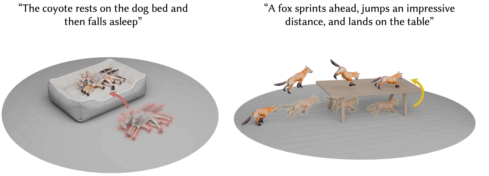
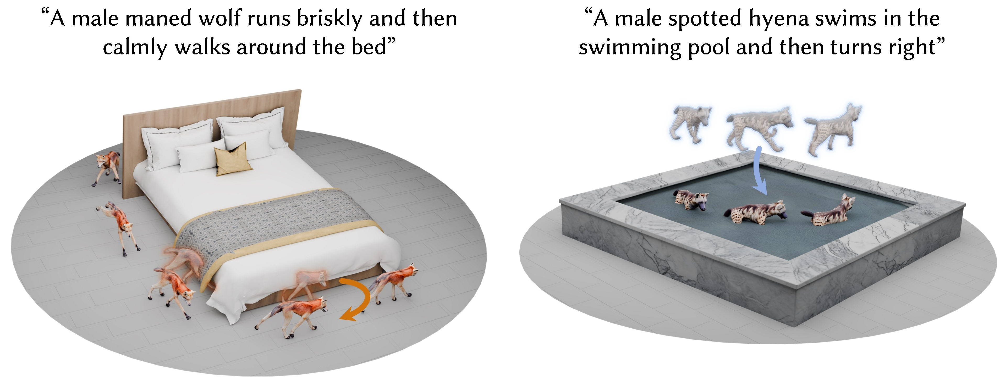
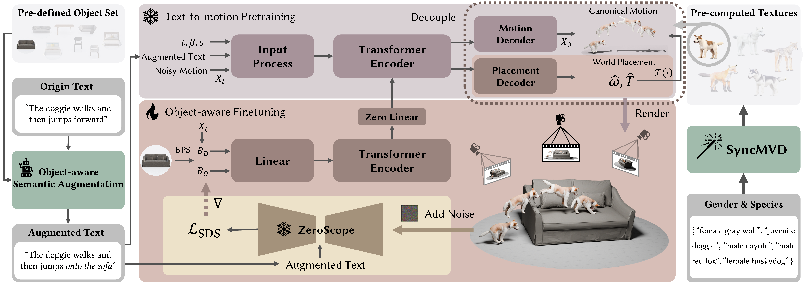

Semantic Prior

Spatial Relationships
Interaction-specific Motion Patterns
SIGGRAPH Asia 2026
School of Computer Science & Technology, Beijing Institute of Technology
indicates corresponding author


Video diffusion models encode rich semantic knowledge and implicit physical priors, providing training-time supervision in the absence of paired interaction data.
Generating realistic 3D Canine-Object Interaction from text is crucial for scalable asset production and immersive experiences in games and virtual reality. Despite substantial advances in Human-Object Interaction generation, extending this success to Canine-Object Interaction generation remains challenging, primarily due to the scarcity of text–object–motion pairings and heterogeneous skeletal topologies in existing animal motion datasets. To tackle these issues, we propose ZeroCOI, a zero-shot learning framework that synthesizes Canine-Object Interaction from text prompts without relying on paired text–object–motion supervision. Our key insight is to harness the rich semantic knowledge and implicit physics priors encoded in large-scale video diffusion foundation models trained on diverse in-the-wild Canine-Object Interaction patterns. ZeroCOI first learns canine motion priors from a topology-unified dataset using a text-to-motion diffusion model. It then decouples canonical motion generation from spatial interaction placement, introducing a control branch that injects semantic and spatial interaction cues via distribution-level video-domain Score Distillation Sampling while encouraging physical plausibility through geometric constraints. Extensive experiments demonstrate that ZeroCOI enables semantically aligned and physically plausible Canine-Object Interaction synthesis from text prompts, with robust generalization to unseen object categories and geometries. Furthermore, extended applications illustrate the scalability of ZeroCOI across various scenarios, including cross-species extensions, human-canine interactions, and scene-level interactions, demonstrating the tremendous potential for the broad community.

A dog abruptly jumps high and dashes ahead on the fabric sofa
The male spotted hyena runs to the bowl and then pounces on it
The female gray wolf trots forward, then jumps onto the sofa, lands and walks a short distance
The small pug steadily walks toward the chair, ending under the chair
If you find this project helpful to your research, please consider citing:
@inproceedings{chen2026learning,
title={Learning to Generate Text-guided 3D Canine-Object Interactions via Video Diffusion Priors},
author={Chen, Siyu and Wang, Zan and Xu, Hao and Zhang, Minghe and Pei, Mingtao and Liang, Wei},
booktitle={SIGGRAPH Asia 2026 Conference Papers},
year={2026}
}